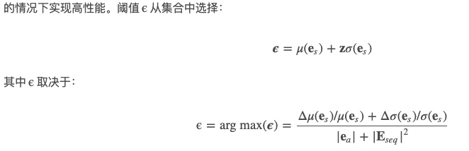

tool-多元数据-Pyod
Pyod是一款专门做异常检测的python工具箱
github: https://github.com/yzhao062/pyod
文档说明: https://pyod.readthedocs.io/en/latest/index.html
【异常检测1】无监督-多元数据
☆☆☆https://github.com/yzhao062/anomaly-detection-resources 资料综述，包括相关工具与论文
总述：
从异常检测要检测的目的数据的不同，大致可以分为如下几类，后续会分别对这几类进行综述学习。
- 多元特征数据，传统的n_sample x n_features形式
- 高维数据
- 时间序列，行为序列
- graph, network
【异常检测3】Abnormal behavior detection （行为/视频）
行为序列的异常？ video中异常行为检测？
sequence based
- 相似性： 假设所有数据都是normal的，然后找到normal sequence， 最后计算与normal sequence的距离(比如LCS)
- window based。traing：所有sequence 分成多个windows，windows的score：frequence；classifier：随机生成数据作为anomaly标签。 testing：instance的各个windows的anomaly socre组合：取平均；取大于阈值的个数；LFC（计算anomaly window前n个window中anomaly 的个数）
- HMM：
论文1【Soft + Hardwired Attention: An LSTM Framework for Human Trajectory
Prediction and Abnormal Event Detection】
本文主要提出了一种基于LSTM的行为预测和异常检测方法
related work：human behaviour prediction 文献回溯
- 轨迹聚类
- 预测人类行为，一个常用的方法是social force model，可以详见 https://wenku.baidu.com/view/c6359d0452ea551810a68733.html
- attention models

论文2 Detecting-Spacecraf-Anomalies-Using-LSTMs-and-Nonparametric-Dynamic-Thresholding
有几点可以学习的地方：
动态误差阈值：对于模型产生的预测误差，将其进行平滑处理(比如指数加权),然后针对平滑后的设置阈值。
阈值计算：

简单地说，就是找到这样一个阈值，如果去掉超过他的所有值后，平滑误差\(e_s\)的均值和标准差会下降最大的百分比。另外还考虑到了正则化惩罚，惩罚具有大量与长治\(|e_s|\)和序列\(|E_{seq}|\)以防止过度贪心的行为。
减少误报-假阳性
论文3 abnormal behavior detection in crowd scenes
光流法(optical flow)（简介https://zhuanlan.zhihu.com/p/44859953），一般用HOF或者MHOF（histogram of optical flow）作为速度、方向的统计信息特征
工具
https://github.com/khundman/telemanom
使用报错 OMP: Error #15: Initializing libiomp5.dylib, but found libiomp5.dylib already initialized.
解决方案:在执行的example.py脚本中加入
import os
os.environ['KMP_DUPLICATE_LIB_OK']='True'
一个简化版讲解 https://www.cdxy.me/?p=812
telemanom.modeling: model 加载或者创建新的
telemanom.errors: 对应论文中自动确定阈值部分
Copyright © 2015 Powered by MWeb, Theme used GitHub CSS.